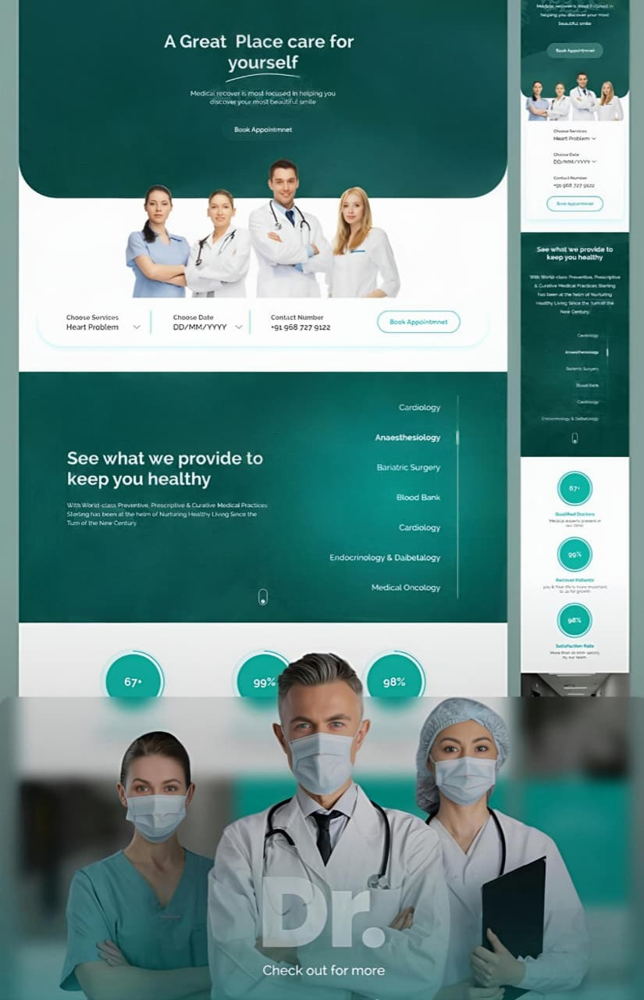

Hospital SEO Strategy
Keyword research, competitor mapping and search architecture focused on high-intent patient journeys.
Healthcare SEO and reputation growth
We improve Google visibility, strengthen star ratings and build patient trust with SEO systems designed for hospitals, clinics and specialty care brands.

Services
Keyword research, competitor mapping and search architecture focused on high-intent patient journeys.
Technical SEO, local landing pages, content optimization and authority signals that help hospitals rank higher.
Review generation workflows, response guidance and profile improvements that encourage stronger patient confidence.
Service pages, doctor profiles, testimonials and reputation content that make your hospital easier to choose.
SEO-ready hospital content that explains care clearly while supporting ranking, conversion and compliance awareness.
Dashboards for rankings, traffic, calls, form submissions, review movement and search visibility progress.
Process
GWU aligns website SEO, Google profiles, ratings and patient-facing content so each signal supports the next.
We review search performance, technical health, local profiles, review patterns and competitor strengths.
We improve service pages, local intent pages, metadata, schema, speed, content depth and conversion paths.
We support ongoing content, review growth, GBP optimization, authority building and monthly reporting.
Results
Trust Framework
We align names, services, locations, hours and contact paths across key patient discovery points.
We strengthen review visibility, response quality and trust cues without making unrealistic promises.
We structure content so patients understand departments, procedures and next steps with confidence.
Rankings, calls, forms, traffic and review trends are presented in a clean monthly growth view.
Start with clarity
Share your hospital website and priority service lines. GWU will identify the ranking, rating and trust opportunities that can move patient acquisition forward.